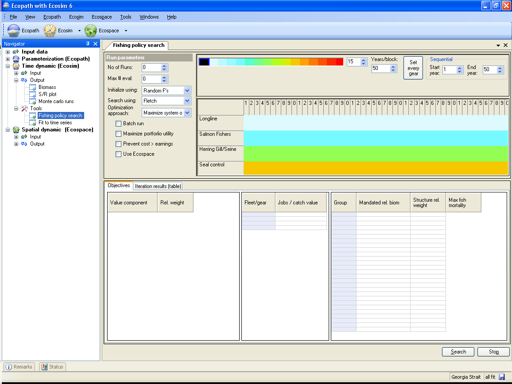

Two different approaches can be taken to identification of optimum levels of fishing efforts for multiple fleets that may each harvest multiple species from an ecosystem, the ‘Sole owner’ approach and the more complex ‘Multiple fishing rights’ approach (see Christensen and Walters 2004). Implementation of the policy search in Ecosim using each of these two approaches is detailed below.
Several steps are involved:
Step 1. Select Maximize system objectives from the Optimization approach drop down menu on the top left panel of the form.
Step 2. Set the Discount rate and Generational discount rate.The discount rate is the annual rate (entered in %) applied to discount the present value of future catches relative to present base value. See Ainsworth and Sumaila 2005 for description of intergenerational discounting.
Step 3. Define ‘fleet/year parameter blocks’ for the search procedure. In the top right panel of the form, click on a fishing rate colour code from the colour bar then, on the fleet/year box below, hold down the left mouse button and sketch the colour onto a block of cells representing a set of years for a fleet, where each colour-coded ‘year/fleet block’ defines one parameter (i.e., fishing rate) to be varied by the DFP search procedure (i.e., the procedure will iteratively try to improve the objective function by varying the relative fishing rates in each of the colour-coded year/fleet blocks).
Then select a second colour code and sketch the year/fleet block for this colour. Continue until all year/fleet blocks have been specified (you can increase the number of blocks using the box at the end of the colour bar). Any fleet/year blocks left black will not be modified by the search procedure (i.e. will be left at Ecopath base fishing rate or most recently sketched fishing rate values). You can also use the Set gear button to automatically set a different colour block for each gear (i.e., apply a single effort level over time for each fleet).
If you want to set more than one colour block for each fleet, you can set the number of years per colour block using the Years/block box, where the default number of years per block is the number of years in the series. If you reduce the number of years per block, this is taken into account when you use Set gear. Use theStart and End year boxes to set the years over which the search procedure operates. Note that the colours are used only to differentiate the fleet/year blocks from each other and have no intrinsic value.
Step 4. Define objective function weights for net economic value (total landed value of catch minus total operating cost to take this landed value), employment (a social indicator, assumed proportional to gross landed value of catch for each fleet with a different jobs/landed value ratio for each fleet), and ecological stability (measured by departures of biomasses over time from target biomass levels specified by entering ratios of target to Ecopath base biomasses) using the Rel. weight column of the Value component table. Note that you may initially need play with different values for the objective function weight for each factor to find ranges that produce contrast in the final value of the objective function.
Note that there are two possible economic optimization criteria. The first is to imagine full cooperation among fishers, where all incomes and costs are pooled and profits shared among fishers. This is the default case for the economic net profit calculation, and the policy interface will seek to maximize total profits totalled over all fleets even if this means operating some fleets unprofitably (to act as controls on less valued species that compete/predate on more valued ones).
The second option (invoked by checking the Prevent costs > earnings check box on the search interface) is to seek maximum total profits over all fleets, but subject to the fleet viability constraint that each fleet must earn at least enough to meet its operating costs, i.e. must be economically viable in its own right. This second option is in effect a constrained cooperative economic solution, constrained by the requirement that no fleet be operated at a level that would require public subsidy or transfer payments from other fleets.
Step 5. If you are placing weight on Employment, Mandated rebuilding or Ecosystem structure you may also need to set extra parameters for these in the two tables in the bottom panel of the form.
Jobs/catch value
Use this table to set the number of jobs relative to the catch value. The default is 1 for each fleet, implying that if the catch doubled, the number of jobs would also double.
Mandated rel. biomass
Use this column to set a threshold biomass (relative to the biomass in Ecopath) for the species or group of interest. The search routine will search for the fleet effort structure that will most effectively ensure this objective.
Structure rel. weight
When Ecosystem structure is included in the objective function, the search routine favours larger biomasses of long-lived organisms, indicated by B/P (i.e., P/B-1). These values are listed in the Structure rel. weight column and can be changed if users wish to place more or less weight on some groups than indicated by their B/P or if the user wishes to optimize for something other than B/P under the ecological objective.
Max. fishing mortality
For some groups, a threshold fishing mortality that should not be exceeded may be legislated. Use Max. fishing mortality instead of Mandated rel. biomass (with a weight placed on Mandated rebuilding in the Value component table) to explore, for example, the effects of using non-selective gears that catch species with low threshold fishing mortalities as bycatch.
Step 6. Set the maximum number of evaluations using the Max # eval drop-down list. The default is 2000. Quite often the maximum of the objective function will be found before the maximum number of iterations is reached. If the results have not converged on a solution by the end of the iterations, try the search again with a greater number of iterations.
Step 7. Invoke the search procedure by clicking the Search button at the bottom of the form. Results will be pasted to the Iteration results (table) tab in the bottom left hand panel of the form. Each row shows the results from one evaluation, showing the value of each objective then the fleet effort values for each colour block that resulted in the objective values. If the routine converges on a maximum value for the objective function, the last row will represent the optimum fleet effort values.
Step 8. Test for local maxima and sensitivity to objective weights. It must be understood that nonlinear optimization methods like DFP can be tricky to use and can give grossly misleading results: in particular the method can ‘hang up on local maxima’, and can give unrealistic, extreme answers due to inappropriate objective functions.
To check for false convergence to local maxima, rerun the search at least a few times using the ‘random starting F’s’ option (Initialize using drop-down menu), and check final answers by forcing additional iterations using the ‘start at current F’s’ option. To test for sensitivity of the results to objective function parameters, try searches for a variety of values of the objective function weights and parameters.
The ‘multiple fishing rights’ approach is to treat each fishing fleet (and perhaps non-consumptive stakeholder or user groups as well) as a separate economic industry with some legal right or entitlement to harvest, then seek a level for each fleet that optimizes a fleet-specific performance criterion such as total profits or growth until profitability (ratio of profits to income or cost) falls to a typical or reasonable level for economic industries in the economy as a whole. The basic problem in this ‘multiplayer game’ approach is that performances of the fleets are linked through bycatch and trophic interaction effects. Growth of some fleets may enhance fishing opportunities for others (e.g. fishing on piscivores can result in higher net production of planktivores), while growth of other fleets may shunt surplus production away from other fleets (e.g. fishing on planktivores can reduce production of piscivores and abundances of non-target species that are valued for non-consumptive activities like whale-watching).
When filtered through the complex of ecological interactions involved in a food web, the net effect of any fleet on any other can be quite counter-intuitive. For instance, in development of management policy for red snapper (Lutjanus campechanus) in the Gulf of Mexico, it has been assumed that large bycatches of this species in shrimp trawls have been deleterious to recruitment, and that sustainable harvests of red snapper would be increased if shrimp trawlers were required to use bycatch reduction devices (BRDs). But in fact there is evidence that recruitment of the snapper may actually have increased since development of the shrimp fishery, and ecosystem modelling exercises suggest that this may be because shrimp trawling has had a larger negative effect on competitors and predators of juvenile red snapper (and shrimp) than its direct mortality effect on the juveniles.
One approach to multispecies optimization would be to promote selective fishery practices by each fleet (minimize wasteful bycatch with no apparent trophic benefits), then encourage each fleet to develop to an optimum economic level (defined by some criterion like profit or profitability). Then as multiple fleets develop in successive moves of the multiplayer game, cross-impacts (both positive and negative) would be exposed in terms of impacts on catches and costs, and the optimum or target level for each fleet would evolve over time in response to changes in the other fleets. Such a system might or might not approach some multi-fleet bionomic equilibrium (they typically do in Ecosim simulations), but that equilibrium would typically involve considerable erosion in ecosystem structure especially at top trophic levels due to shunting of production into fisheries for species of lower trophic levels.
An alternative approach is to explicitly recognize the linkages among fleets in potential production caused by trophic interactions, and to enforce the right of each fleet to a productive existence by charging any other fleet that negatively impacts on its potential production (as an ‘externality’ caused by the impacting fleet) for the losses that the impacting fleet causes. A simple way to assess such costs in a simulation framework is to first find the equilibrium catches, incomes, and costs for all fleets held constant at some starting level, then shut down one simulated fleet and run the simulation to equilibrium with just the other fleets still fishing. The equilibrium gains in income achieved by the other fleets are a direct estimate of the income losses caused by the fleet that has been shut down. Repeating such shut-down simulations for every fleet results in a cross-impact matrix of costs (or net benefits) to every fleet caused by every other fleet.
The cross-fleet cost assessment method suggests a simple optimization procedure for finding optimum combinations of fleet sizes under the ‘multiple fishing rights’ approach to management. Start at a base size for each of the fleets, and perform the closure simulation test described above for each fleet to estimate its ‘current’ costs to other fleets. Using those costs, calculate net profits or profitability for each fleet if that fleet were held accountable for all trophic interaction costs (i.e. calculate its income minus direct operating costs minus costs incurred by other fleets in the form of lost production caused by it). Based on that corrected profitability, increment or decrease the fleet size toward a target (economic optimum or socially acceptable) level. Take the resulting set of levels as a new starting point, and repeat the cost, adjusted profitability, and fleet size update calculations. Based on numerical experience with this approach using Ecosim models, the successive moves in this multiplayer game typically result in a unique bionomic equilibrium after a few dozen moves (provided the moves are not so large as to cause instability or chatter in the fleet size solution vector).
Besides explicitly recognizing rights to existence for various fishing fleets or methods, this iterative approach typically produces fleet size solutions that (1) preserve diversity of economic activities and options; (2) avoid loss of biological diversity through deliberate or inadvertent ‘fishing down the food web’ or concentration of ecological production in just a few most valuable species; and (3) allow considerable flexibility among fishing activities in defining alternative performance criteria, e.g. profitability standards can be set quite differently for recreational and artisanal fisheries than would be considered best for typical industrial fisheries. Most importantly, there is no presumption that ‘society’ as a whole can best be served through some particular combination of fleet sizes that maximizes some arbitrary, overall performance criterion.
Implementation of the iterative approach described above for multiple fishing rights optimization is very simple:
Note that the multiple fishing rights optimization seeks effort levels that achieve target profitabilities (profit/income), NOT maximum total profits or other measure of total industry performance. Such total industry measures are not typically used in regulation of industries in general, and there has been no convincing argument about why they should be used in fisheries except for the public-ownership possibility that the public could capture rents from public resources (but there is as yet no single instance in the field where such rents have actually been captured by the public; instead the rents in severely limited fisheries go to making vessel owners wealthy).

Figure 9.8